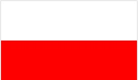
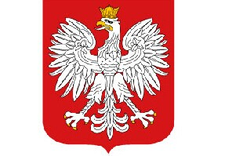
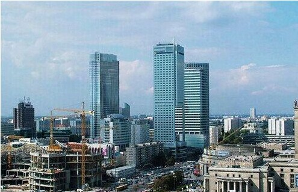
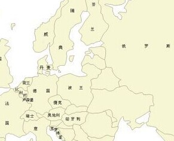

- 波兰国旗
- 波兰国徽
- 波兰标志性建筑
- 波兰地理位置
波兰概况
波兰是一个中欧国家
人口概况
全国人口数量为3850.1万人（2012年3月22日）。其中波兰族约占98%, 此外还有德意志、白俄罗斯、乌克兰、俄罗斯、立陶宛、犹太等少数民族。官方语言为波兰语。全国约90%的居民信奉罗马天主教。
波兰经济
工业发达。波兰2009年的人均GDP达到11288美元, 采矿业以煤及褐煤最重要, 煤炭储量居欧洲前列。主要矿产有煤、硫磺、铜、锌、铅、铝、银等。2000年硬煤储量为453.62亿吨, 褐煤139.84亿吨, 硫磺5.04亿吨, 铜24.85亿吨。琥珀储量丰富, 价值约近千亿美元, 是世界琥珀生产大国, 有几百年开采琥珀的历史。工业以采煤、机器制造、造船、汽车和钢铁为主。2001年有农业用地1839万公顷。耕地占国土面积50%左右。主要作物为各种麦类和马铃薯、甜菜等。牲畜主要养牛、猪和羊。2001年农村人口占全国人口的38.3%。农业就业人数占就业总数的28.3%。出口以工矿产品(煤、褐煤、焦炭、船舶、车辆等)为大宗；进口以石油制品、铁矿石、棉花和粮食为主。
波兰外交
1949年10月7日，中国和波兰建立大使级外交关系。
中波两国有着传统的友好关系，早在1950年两国就签署了第一个政府间贸易协定。中波关系在相互尊重、平等互利、互不干涉内政的原则基础上稳步发展，各层次、各领域的交流与合作不断深化。中波经贸关系也有了长足的进展。
1997年11月，克瓦希涅夫斯基总统对中国进行国事访问，这是近40年来波兰国家元首首次对中国进行国事访问。2004年6月，胡锦涛主席对波兰进行国事访问，两国建立友好合作伙伴关系，双方签署了联合声明。2008年10月，图斯克总理对中国进行正式访问。 中波关系稳步向前发展。中波经贸关系也有了长足的进展，2003年两国的贸易额达19．8亿美元。
2003年两国的贸易额达19.8亿美元。波兰是中国在中东欧地区的第一大贸易伙伴，中波双边贸易额在2010年达到111.4亿美元，同比增长23.8%。